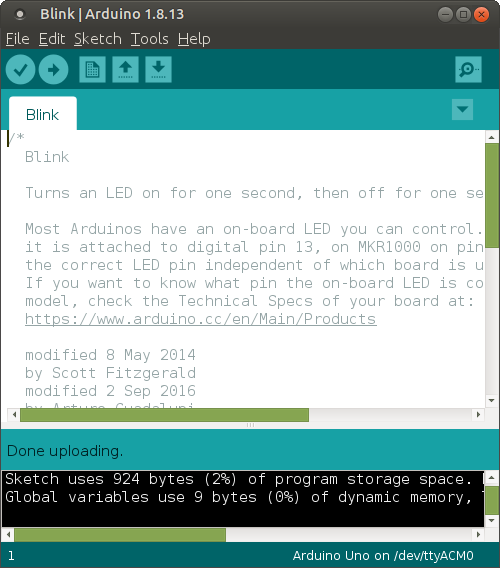

Arduino IDEのダウンロード
Arduino IDEを 公式HP からダウンロード。
「Download the Arduino IDE」の「Linux ARM 32 bits」をクリック。

「JUST DOWNLOAD」をクリック。
Save Fileを選択して［OK］ボタンをクリック。
Downloadsディレクトリにファイルが保存される。
Arduino IDEのインストール
ターミナルを起動して、Downloadsディレクトリに移動。
$ cd Downloads/
ダウンロードしたファイルがあるか確認。
$ ls arduino-1.8.13-linuxarm.tar.xz
ダウンロードしたファイルを展開。
$ tar -Jxvf arduino-1.8.13-linuxarm.tar.xz
展開したファイルを確認。
$ ls arduino-1.8.13 arduino-1.8.13-linuxarm.tar.xz
展開したファイルを別のディレクトリに移動。
$ sudo mv arduino-1.8.13 /opt/
パスワードを入力。
[sudo] password for pi:
移動したファイルのディレクトリに移動。
$ cd /opt/arduino-1.8.13/
次のコマンドを実行して、ショートカットを作成。
$ sudo ./install.sh
次のように表示されたら成功。
Adding desktop shortcut, menu item and file associations for Arduino IDE... done!
デスクトップにショートカットが作成されている。
サンプルプログラムを動かす
デスクトップにあるショートカットをダブルクリックしてArduino IDEを起動。
[File]-[Examples]-[01.Basics]-[Blink]をクリックして、 サンプルプログラムを開く。
LEDを点滅させるプログラムが書かれている。 ここで最初に開いたウィンドウは閉じておく。
[File]-[Save As]をクリックして、 名前を付けてプログラムを保存。
保存先はホームディレクトリの下のArduinoディレクトリ。
Raspberry PiとArduinoを接続し、 [Tools]からBoardとPortを設置。
- Board:"Arduino Uno"
- Port:"/dev/ttyACM0(Arduino Uno)"

Uploadボタンを押すと、コンパイルと書き込みが行われる。
エラーが発生。
can't open device "/dev/ttyACM0"というエラーメッセージが見える。 次のコマンドを実行してポートを開けるようにする。
dialoutにユーザーを追加。
$ sudo usermod -a -G dialout pi
パスワードを入力。
[sudo] password for pi:
ポートの権限を確認。
$ ls -l /dev/ttyAMA0 crw-rw---- 1 root dialout 204, 64 9月 7 09:32 /dev/ttyAMA0
権限を変更。
$ sudo chmod a+rw /dev/ttyAMA0
権限が変更された。
$ ls -l /dev/ttyAMA0
crw-rw-rw- 1 root dialout 204, 64 9月 7 09:32 /dev/ttyAMA0
ここでRaspberry Piを再起動する。
もう一度Arduino IDEを起動してUploadボタンを押すと、
今度はコンパイルと書き込みができた。

Arduinoのボード上にあるLEDが点滅していることを確認。